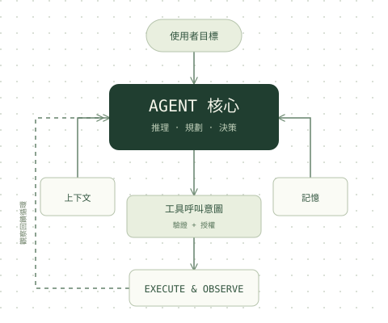

今天要複習哪一個主題？
三個中英雙語的 AI 面試知識庫：讀筆記、做測驗、回頭練錯題。進度存在這個瀏覽器；在主題頁登入 Google，就能跨裝置同步。

Agent Knowledge Lab
AI Agent / GenAI EngineerAgent 架構、Tool Calling、Context Engineering、Memory 與 RAG、多代理、安全、評估與系統設計。

GenAI Knowledge
Generative AI systems模型架構、微調與對齊、RAG 與 Agent、推論與部署，搭配情境式說明與圖解。

VLA Knowledge Lab
Vision-Language-Action · Physical AIVLA 基礎、模型架構（OpenVLA、π0、GR00T、Gemini Robotics）、訓練資料、邊緣部署與系統設計。